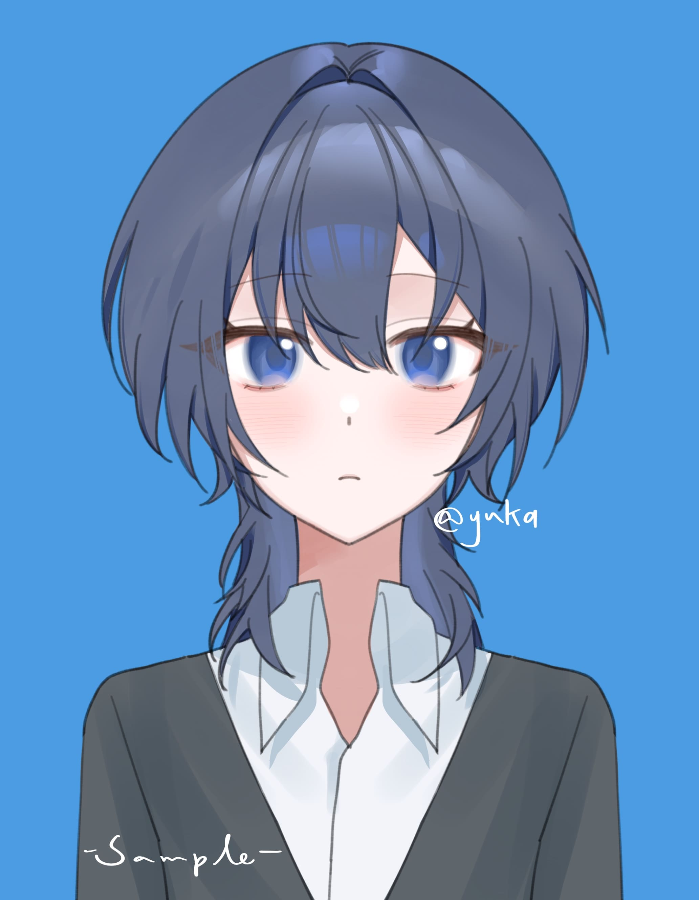
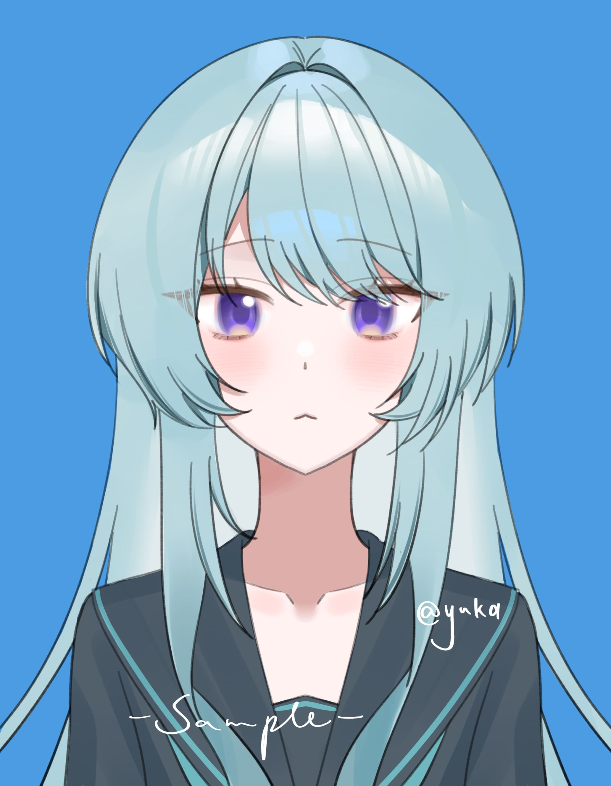
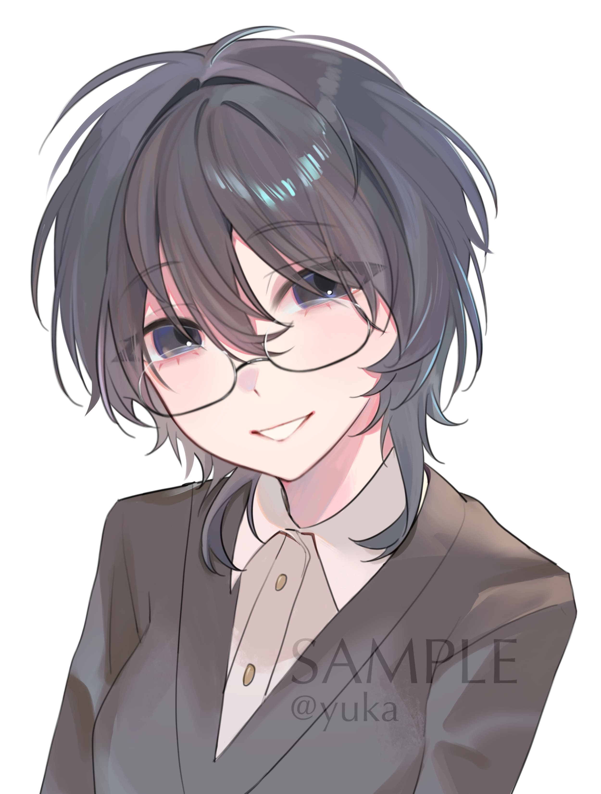
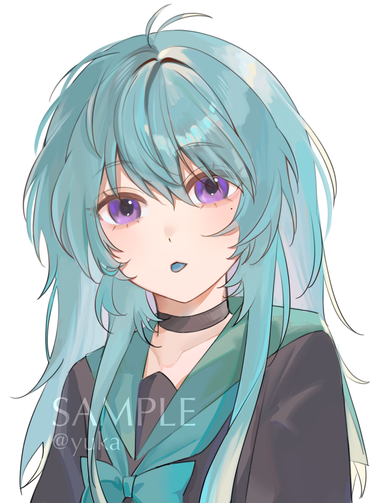
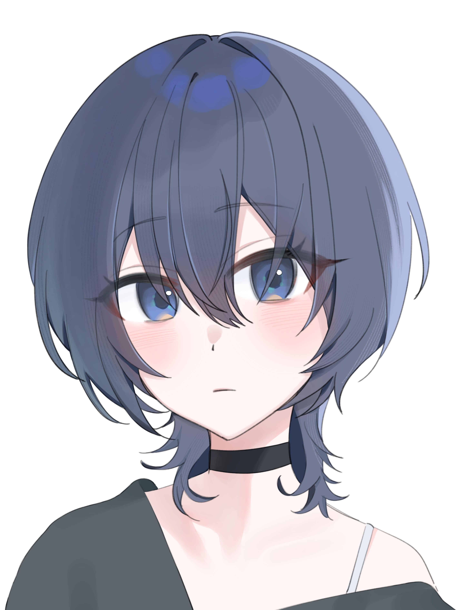
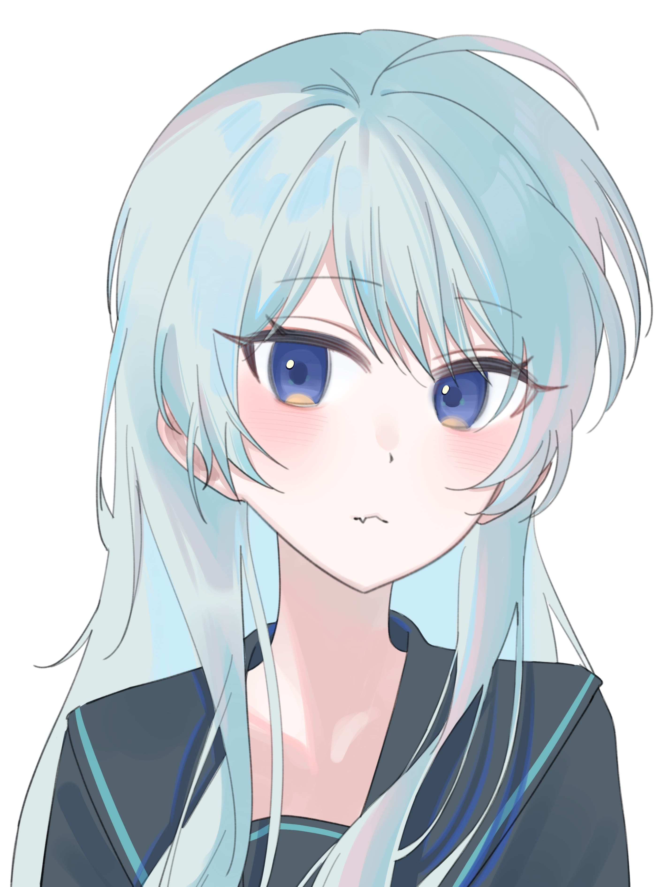

主線篇章
01｜初遇
直到和你相遇那刻，我才稱之為命運。
02｜觸動
目光所及，都是你。
03｜邀約
謝謝你的出現，你很重要，也很特別。
04｜日常
好幸運，我們遇見了。
05｜意外
眼淚不是我們的答案，拼搏才是我們的選擇。
06｜誤會
我又原諒你了，我又和你一起欺負我。
07｜曖昧
匆匆兩三年，忽然又夏天。
08｜告白
你身上什麼味道，瞳孔的深淺，懷抱的溫度，我現在都知道了。
下輩子我要成為你眼角的一顆痣，足夠渺小，卻也足夠特別。
你的每次淚流我都經歷，你的每個情緒我都感知。

17歲｜學生會長
動物塑：貓咪
冷靜、溫柔、腹黑
「表面溫柔體貼，實則腹黑狡猾。」這大概說的就是萌音吧，平日裡是人見人愛的學生會長，但到了菲亞面前，就成了善於撩撥人心的小狐狸。在大家面前總是笑咪咪的，似乎只有一個情緒，只有與萌音最親近的人（菲亞）才能看到他最真實的一面。除了讀書外也擅長畫畫。在學校是人氣王，和誰都聊得來。

18歲｜實驗體
動物塑：狐狸
自由、直率、耀眼
短暫接觸菲亞的人都認為她時常面帶微笑卻性格冷漠，只有與她深交的人才明白，她其實有如春天的陽光般，明亮卻不刺眼。喜歡與人交流，但不會主動接近他人。不擅表達喜怒哀樂，難過時萌音會帶著她到天臺戴著耳機聽音樂，讓心情平復下來。在學校時總是來無影去無蹤，經常出現在意想不到的地方。
直到和你相遇那刻，我才稱之為命運。
目光所及，都是你。
謝謝你的出現，你很重要，也很特別。
好幸運，我們遇見了。
眼淚不是我們的答案，拼搏才是我們的選擇。
我又原諒你了，我又和你一起欺負我。
匆匆兩三年，忽然又夏天。
你身上什麼味道，瞳孔的深淺，懷抱的溫度，我現在都知道了。
未被記錄的日常片段
只有兩人知道的那晚
沒有寄出的告白
被時間沖淡的瞬間

溫柔卻帶孤獨

自由而耀眼



